Satisfying Sushi
- Maki
- Rolls
- Sashimi
Live Cooking & Buffetten in Vianen
Gerechten uit China, Japan, Europa en Zuid-Amerika, elke dag vers bereid. Eten én drinken zijn inbegrepen, ook tapbier en tapwijn.
Bij Fine Cooking ontdek je een wereld aan smaken volgens ons All-You-Can-Eat concept. Een ware gastronomische ontdekkingsreis voor families, vrienden en kennissen.
Kies bij de balie hoe lang je blijft en reken vooraf af. Eén rekening per tafel; apart afrekenen is niet mogelijk.
Loop langs de live cooking en buffetten zo vaak je wilt. Frisdrank, tapbier, speciaalbier, 4 soorten tapwijn, koffie en thee zijn inbegrepen.
Is de eindtijd op je bon verstreken? Dan check je uit bij de balie. Wil je langer blijven, vraag dan naar verlengen.
Een grote diversiteit aan gerechten uit alle windstreken, elke dag vers voor je bereid.
Een ruime keuze uit vegetarische specialiteiten. Voor ieder wat wils.
Vanaf 2 uur genieten voor een vaste prijs. Verken het aanbod en laat je verrassen.
De kleintjes spelen in de speelhoek terwijl jij nog even geniet.
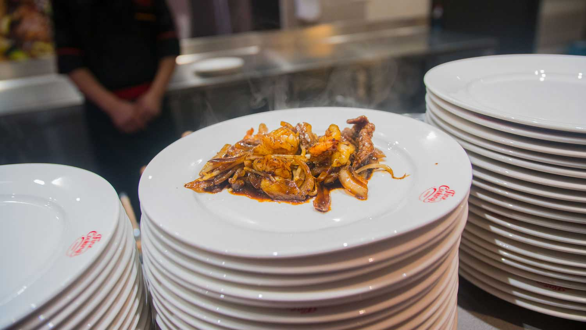
Van sushi tot softijs: dit is slechts een kleine selectie, want het aanbod wisselt.
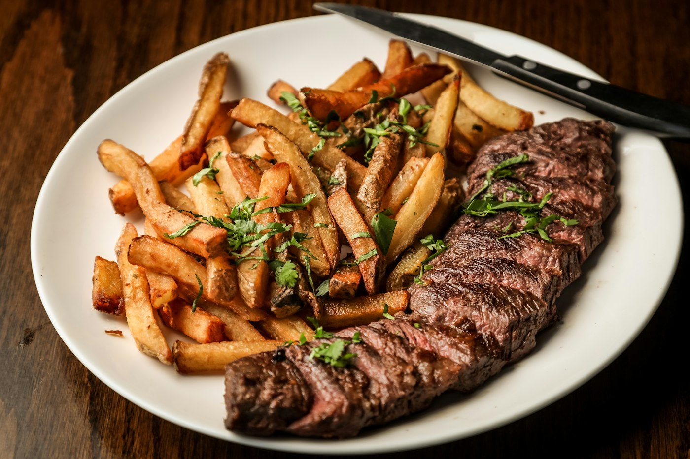
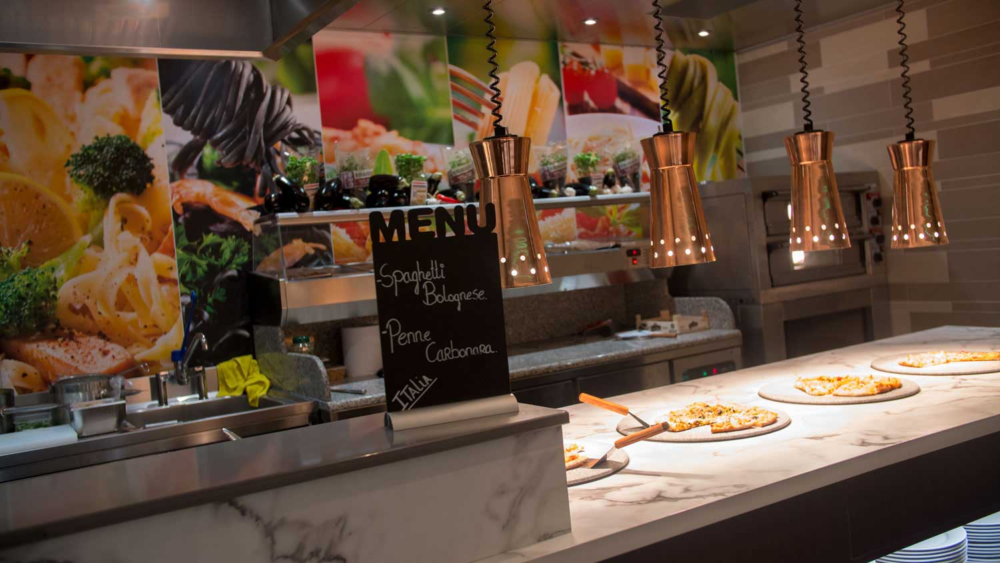
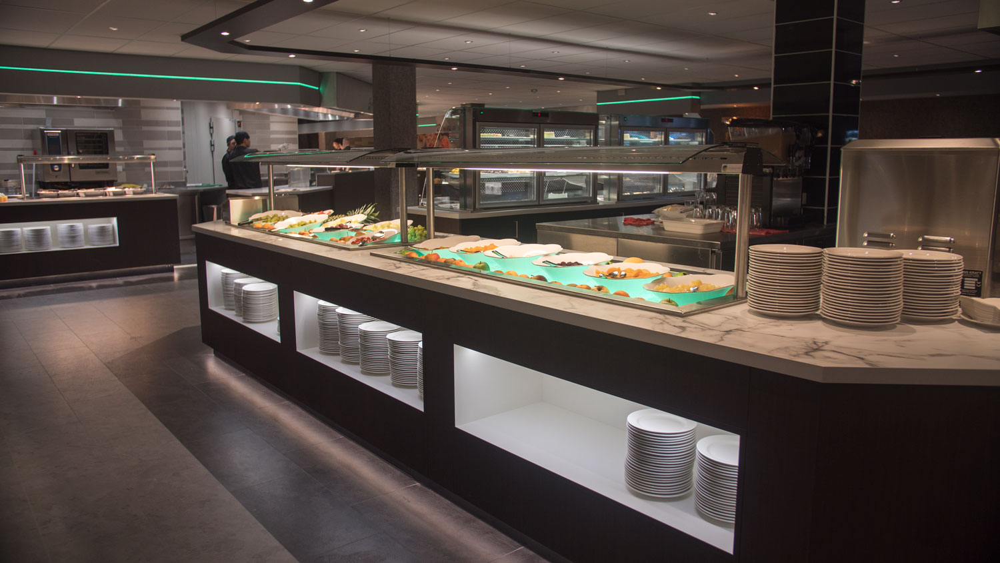
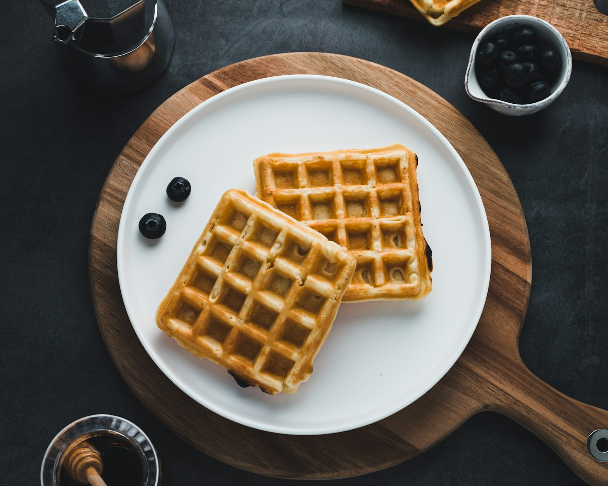
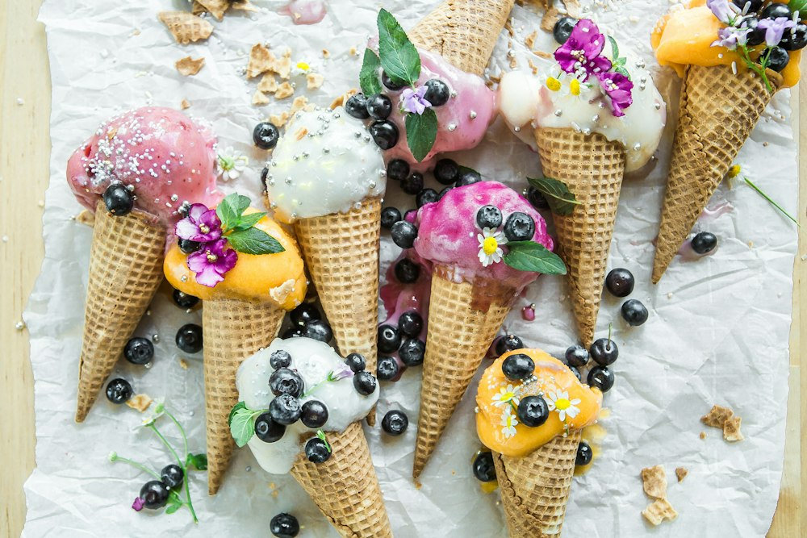
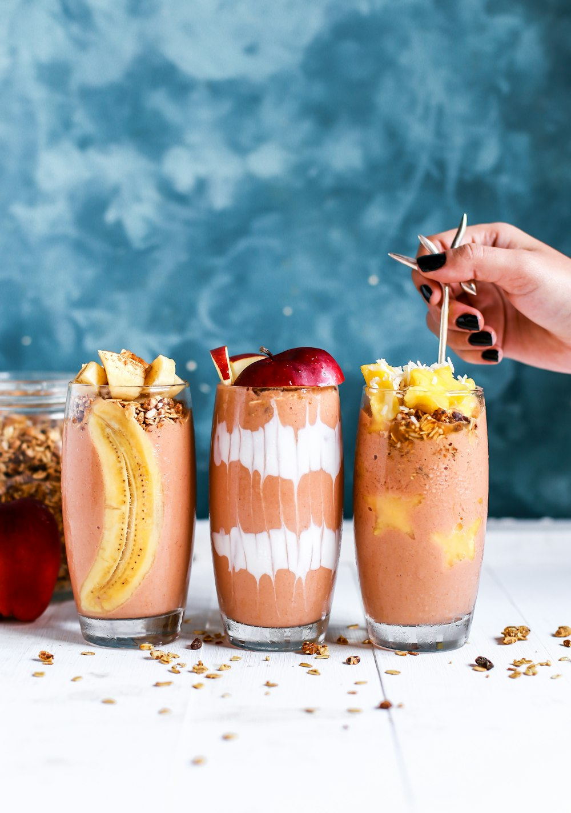
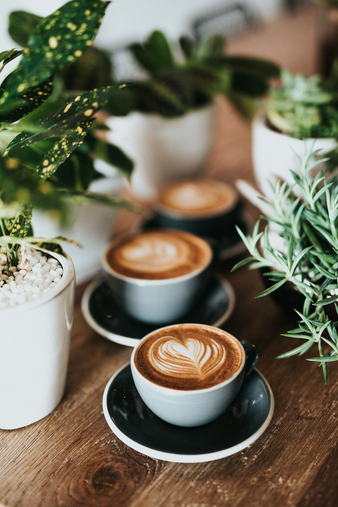
Sushi, dimsum, Italiaans en buffet: foto's uit het restaurant. Overige foto's zijn sfeerbeelden.
Per persoon, all-in: eten en drinken (ook bier en wijn) inbegrepen. Je kiest zelf hoe lang je blijft, van 2 tot 4 uur.
| Duur | Volwassenenvanaf 12 jaar | Kind8 t/m 11 jaar | Kind3 t/m 7 jaar |
|---|
Kinderen van 0 t/m 2 jaar eten gratis. Tel ze wel mee bij je reservering!
Bij een arrangement van 3 uur of langer, voor volwassenen vanaf 12 jaar. De hele groep rekent in één keer af.
Op Pasen, Nieuwjaarsdag, Bevrijdingsdag, Moederdag, Hemelvaartsdag, Pinksteren en Vaderdag gelden de normale weekendtarieven.
Gesloten op maandag Koningsdag, de dinsdag na Pasen en de dinsdag na Pinksteren.
Op speciale dagen, feestdagen en tijdens de kerstdagen gelden afwijkende tarieven. Typefouten en prijswijzigingen voorbehouden.
Kerstavond én beide kerstdagen open. Reserveer tijdig!
| 2 uur | 2,5 uur | 3 uur | |
|---|---|---|---|
| Volwassenen 12+ | € 49,00 | € 52,00 | € 55,00 |
| Kind 8–11 | € 27,75 | € 29,25 | € 30,75 |
| Kind 3–7 | € 20,75 | € 22,25 | € 23,75 |
| Kind 0–2 | gratis | gratis | gratis |
| 2,5 uur | 3 uur | |
|---|---|---|
| Volwassenen 12+ | € 63,95 | € 68,95 |
| Kind 8–11 | € 38,95 | € 41,95 |
| Kind 3–7 | € 30,95 | € 33,95 |
| Kind 0–2 | gratis | gratis |
2,5 uur
3 uur
Reserveren kan ook op ieder kwartier. Sluiting 22:45.
Voor de kerstdagen vragen we een aanbetaling van € 10,- p.p. om no-shows te voorkomen. Annuleer je tijdig via Zenchef, dan krijg je de aanbetaling terug.
Jarig, met een grote groep of vaste gast: zo eet je voordeliger.
Op je verjaardag krijg jij als jarige korting op het All-in arrangement voor volwassenen. Hoe meer betalende volwassenen je meeneemt, hoe hoger je korting.
De korting geldt alleen voor het arrangement van de jarige, berekend over de reguliere prijs voor volwassenen. De jarige telt zelf niet mee als betalende volwassene. Geef bij het reserveren altijd het totale aantal personen door, inclusief de jarige(n).
Meerdere jarigen? De korting wordt per jarige bepaald; dezelfde betalende volwassenen tellen niet onbeperkt mee. Een jarige heeft altijd minstens 25% korting.
Iedere betalende volwassen gast is een sticker waard. Een volle kaart van 20 stickers = een gratis 2,5-uurs diner voor 1 persoon, op dinsdag t/m vrijdag. Vraag ernaar in het restaurant.
Met 600 plaatsen in drie ruimtes is er plek voor grote gezelschappen. Bij 3 uur of langer krijg je groepskorting:
Groepen vanaf 25 personen: het gereserveerde aantal wordt afgerekend, tenzij er meer aanwezig zijn. Minder personen? Geef het tijdig door.
Fine Cooking Wereldrestaurant Vianen is een van de grootste wereldkeukens van Nederland. Met 600 zitplaatsen, verdeeld over drie afzonderlijke ruimtes, hebben we ondanks de grote capaciteit een gezellige sfeer weten te creëren.
Loop eens binnen en ervaar de sjieke sfeer van ons modern ingerichte restaurant. En voor velen een favoriet: het zeer uitgebreide dessertbuffet.
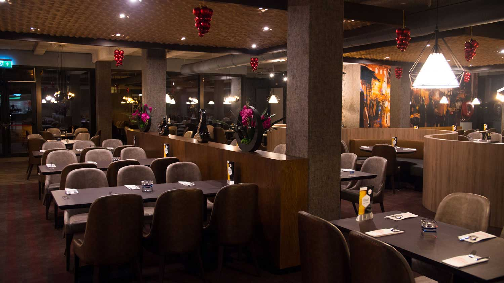
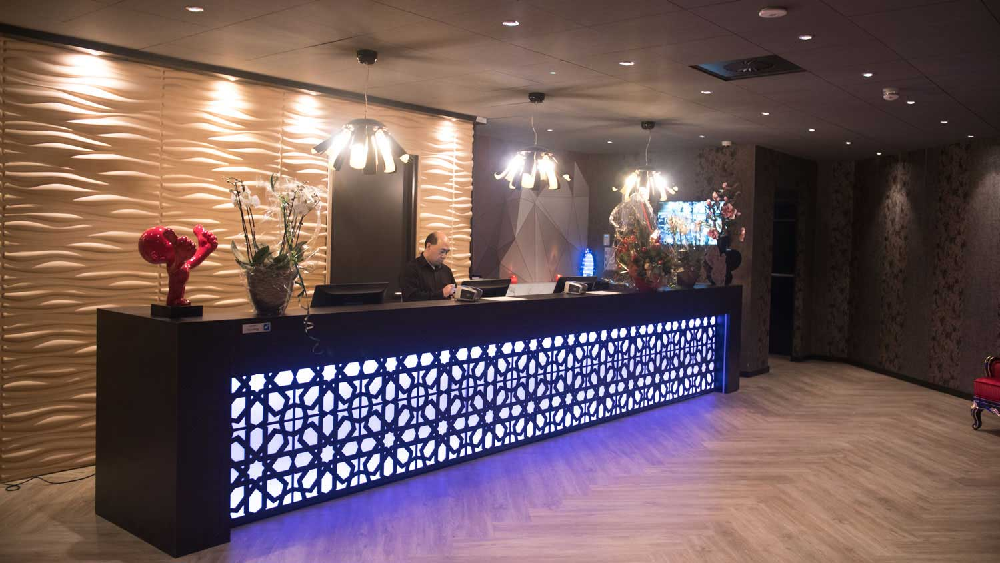
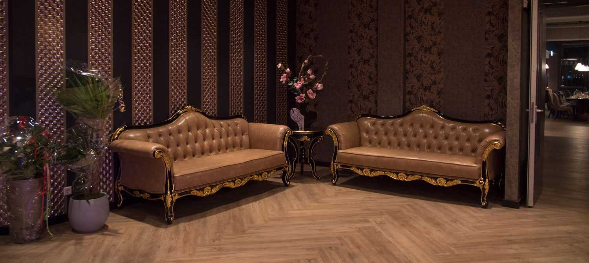
Reserveer online of bel 0347 767 081 (bereikbaar van 12:00 tot 17:00). Vandaag nog komen eten? Na 14:00 nemen we nog telefonische reserveringen aan voor dezelfde dag.
| Maandag | Gesloten |
|---|---|
| Dinsdag | 17:00 – 21:30 |
| Woensdag | 17:00 – 21:30 |
| Donderdag | 17:00 – 21:30 |
| Vrijdag | 17:00 – 22:00 |
| Zaterdag | 16:00 – 22:00 |
| Zondag | 16:00 – 21:30 |
Op feestdagen open volgens de reguliere tijden. Gesloten op maandag Koningsdag, de dinsdag na Pasen en de dinsdag na Pinksteren. Telefonisch bereikbaar van 12:00 tot 17:00.
Direct naast de A27, afrit 27 Hagenstein/Vianen. Gratis parkeren voor de deur.
Staat je vraag er niet bij? Bel of mail ons gerust.
Ja, dat kan. Na 14:00 nemen we nog telefonische reserveringen aan: 0347 767 081.
Laat het ons zo snel mogelijk weten. Op drukke dagen wordt je arrangement korter als je later bent, en 30 minuten na je gereserveerde tijd kunnen we je tafel aan andere gasten geven.
Ja, bij een arrangement van 3 uur of langer: 5% vanaf 30 personen, 7,5% vanaf 50 en 10% vanaf 100 (volwassenen 12+, in één keer afrekenen). Meer over groepen
Zet bij je reservering in het opmerkingenveld dat je met een rolstoel komt. Heb je vragen over de toegankelijkheid? Bel ons gerust.
Neem hiervoor even contact met ons op, dan vertellen we je de mogelijkheden.
Helaas kunnen we vanwege ons concept geen rekening houden met allergieën. Het is niet uitgesloten dat onze gerechten allergenen bevatten. Heb je een vraag over de samenstelling van een product? Vraag het een medewerker.
Nee, we serveren geen halal gerechten.
Nee, we verkopen geen cadeaubonnen.
Wereldrestaurant Fine Cooking Vianen zoekt enthousiaste medewerkers vanaf 16 jaar, vooral voor de vrijdag en zaterdag.
Stuur je cv + fotoVragen, opmerkingen, tips of klachten? We horen graag van je.